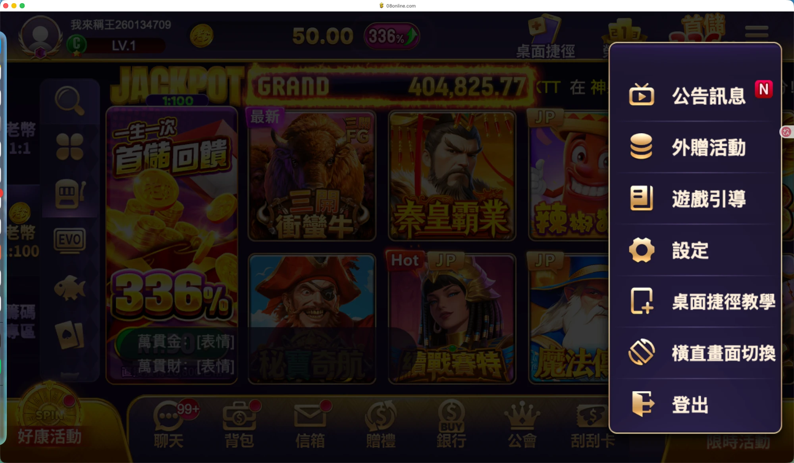

储值活动四成是重复开发：玩法各做一套、入口各配一次，能配的主要是礼包
要你做：验收。第 2 步「工具清单与本期范围」以这份盘点为依据。
01上线一个储值活动：优惠能配，页面和入口每次重做
手工逐页做，错误跟着来：10 月庆典的活动大页开了 14 张官网问题单，多为活动时间写错、内容与规格不符、错字和漏字。
02重复开发有三种形态，庆典月集中爆发
按轮次或按包重开42 个
同一组模块，每次活动都新开一遍需求
例：10 月庆典和 16 周年庆相隔约 3 周半，各开一组同样的 6 个模块：活动大页、抽奖大厅、储优、人数活动、游戏导航弹窗、换皮。超值礼包每出一个新包开一组需求，2025-09 至 2026-06 共 9 个。
同一变更按活动拆单21 个
一个横向改动，要给每个活动各开一单
例：新增「至尊卡」后，礼包、转盘、补给站、抽奖大厅、排行榜等各开一单，共 12 个；「活动周期内储值」参与条件拆成 7 单。
每个玩法一套后台
结构性原因：玩法之间不共用规则和配置
例：扭蛋机、每日补给、红包夺宝、抽奖大厅各有独立后台菜单和需求文档；两次庆典的抽奖大厅规则不同，各开一组需求。
| 开发需求类型 | 个数 | 占 148 个 | 含义 |
|---|---|---|---|
| 按轮次或按包重开 | 42 | 28% | 同类模块每轮重新开发 |
| 同一变更按活动拆单 | 21 | 14% | 横向改动给每个活动各做一遍 |
| 已有活动的优化 | 60 | 41% | 已上线活动的功能迭代 |
| 新玩法 | 19 | 13% | 首次开发的活动或机制 |
| 商城、银行改版 | 6 | 4% | 结构性改版 |
庆典月是高峰：42 个重开里有 25 个来自 8–9 月的两次庆典；去掉庆典，日常月份重开约占 14%（17／123）。按月看，8 月 25 个最多，2 月 4 个最少。
03能配置的是礼包和入口登记，玩法和页面配不了
| 后台 | 现在能配 | 配不了、要开发 |
|---|---|---|
| 储值活动设定 | 新增 5 类礼包活动：独享、三选一、每日、平台限量、专属；卡别对象（含标签）、卡别加码回馈、活动说明（多语言）、时间、优惠次数 | 新礼包类型；每个礼包的活动页 |
| 产包设定 | 超值礼包的包内容 | 活动页每包要做（美术＋web） |
| 好康设置 → 活动列表 | 4 类条目：宣传图链接、营运活动、外赠活动、活动排行；排序权重、标题、标签（精选／储值／好康／最新／热门）、入口显示时间、平台、图片、链接位置 | 下拉里没有的新活动；各活动的时间、按钮、说明不统一 |
| 大厅限时活动入口 | 活动类型、图标、排序、活动图、角标（押注／储值／登入／分享／回归／其他）；时间与可见对象读活动本身；最多 20 个，同类只能一个 | 下拉里没有的新活动；游戏活动与平台活动分区 |
| 公告管理 | 热门资讯（大图、标签、链接，可跳活动、外链、银行超值礼包）、系统公告、Loading 页公告、大厅 Banner；可见对象与排除 | 官方／活动／其他分类 |
| 各玩法后台 | 扭蛋机、每日补给、红包夺宝、抽奖大厅等各自的规则参数 | 跨玩法复用；新玩法要全套开发 |
可见对象已经统一：一个活动的派发结果，同时控制好康、Banner、主打区、游戏内悬浮、快显、推播 6 处是否显示；公告不在这套判定里。
04需求里的 7 种工具：礼包、累充、抽奖已有但各做各的，满减、团购、一元夺宝没有
| 工具 | 现在有没有 | 现在的形态 |
|---|---|---|
| 礼包 | 有，类型最多 | 半模板：包内容能配，新类型和活动页要开发 |
| 累充 | 有，散在多处 | 累储活动、每日补给的累计任务、储值助阵榜、抽奖大厅储值送券，各在各的玩法里实现 |
| 抽奖 | 有，多种 | 抽奖大厅、月月抽、扭蛋机、红包夺宝、金币小玛莉等各一套后台；抽奖大厅每轮规则不同都要开发 |
| 折扣 | 没有独立工具 | 由储优回馈、优惠券、限时加码分别承担 |
| 满减 | 没有 | 没有「满 X 减 Y」；最接近的是满购礼包、满购抽奖，属一次性开发 |
| 团购 | 没有 | — |
| 一元夺宝 | 没有 | — |
和产品规划一致：产品 idea 页给银行（商城）的方向是「增加更多隨機性內容，包括儲值 抽獎等」。
05三个入口定位重叠：同一活动挂五到七处，产品也判断「功能重叠」



| 入口 | 玩家看到 | 原定位 | 和需求方向的差距 |
|---|---|---|---|
| 好康活动（左下） | 排行榜、外赠、十月庆典、抽奖大厅、黄金百万、储值等，一次看一档大图 | 2025-12 草案：给新手的活动聚合入口；idea 页：「原目標：承載部分活動和功能 淪為活動展示」 | 要改为金流／商城入口，银行换到这个位置；现有 4 类条目里没有商城类 |
| 限时活动（右下） | 图标网格，最多 20 个，带剩余天数和红点 | 草案：给老玩家的快捷入口 | 要分游戏活动和平台活动；现在只有 6 个角标，没有分区 |
| 公告（右上菜单） | 「最新活动」大图列表、「公告讯息」 | 草案：最新活动大图、维护公告、文字公告 | 要分官方、活动、其他；现在没有这个分类 |
重叠的实例：祈福财神庙同时挂在限时活动、好康、推播、快显、热门资讯，另有游戏内悬浮和背包道具。产品 idea 页写「好康/限時/公告 功能重疊」；2025-12 草案写「同一活動於多個位置重複展示，資訊冗餘」。
06对第 2 步的含义：先消掉重复开单，在已有配置上扩（推断）
先把重复的三类做成配置
活动页模板（超值礼包、活动大页、储优页）、庆典模块（换皮、导航弹窗、人数活动）、横向条件（卡别、储值资格）
这三类是 63 个重复开发的来源
在已有基础上扩，不从零做
储值活动设定（礼包）和统一的可见对象判定，可以作为通用配置层的起点
储值活动设定已在用；可见对象判定已有规格（2026-01）
入口挂载改成活动的一个字段
活动配一次，勾选展示在哪些入口；新活动自动进入可选列表
取代三套后台各配一次、下拉缺选项要开发
07还确认不了的：数量是下限，后台截图读不到
- 148 个是下限。按标题人工归类，用别名命名的活动（金银满盆、世界杯专案、回归聚宝等）没计入；只在后台配置、没开需求的轮次，在 Jira 里看不到。
- 累充是否已有通用模板。初查显示金流活动设定有「累储单笔」「累储累计」两种类型，还没核对规格页。
- 后台下拉的完整选项。规格页里的截图读不到，所以「链接位置」能选哪些、好康能否直接跳银行或商城页，没有确认。
- 弹层入口。「最新活动／公告讯息」弹层判断从右上菜单「公告讯息」打开，依据是页签名一致、标签体系与热门资讯一致；没有文档直接写明。
- 线上状态。Jira「已完成」不等于线上已发布；银行改版高保真（6 月）的内容没有读到。
08待你补：补了更准，不补也照常推进
| 要补的 | 我的判断与暂按做法 | 补了会怎样 |
|---|---|---|
| 弹层从哪打开 | 右上菜单「公告讯息」；暂按这个写 | 确认一句即可，影响公告的新定位怎么写 |
| 两张后台截图 | 好康设置 → 活动列表的新增页；储值活动设定的新增页。暂按规格页写 | 第 3 步的通用字段能直接对齐现有后台 |
完整明细：重复开发与储值活动明细 · 入口后台配置明细（含工单号与原文摘录）
截图：大厅首页 · 需求原文